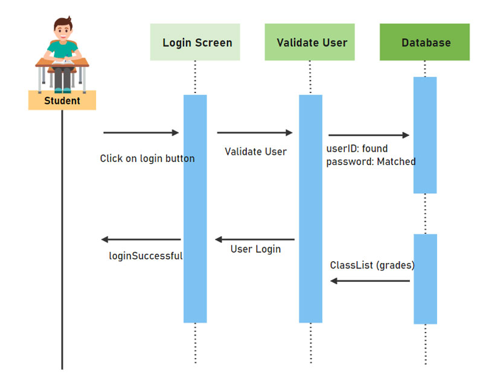
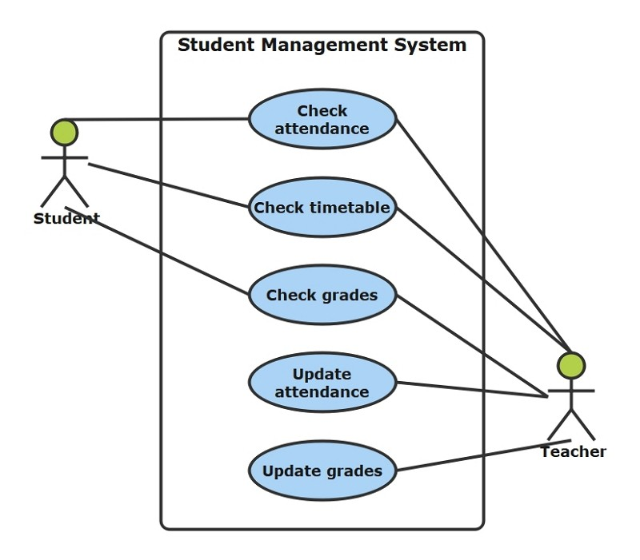
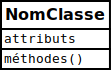
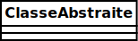
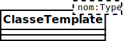
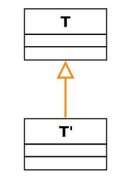

Diagrammes UML
Définition de l'UML
Le Langage de Modélisation Unifié, de l'anglais Unified Modeling Language (UML), est un langage de modélisation graphique à base de pictogrammes conçu comme une méthode normalisée de visualisation dans les domaines du développement logiciel et en conception orientée objet.
UML est destiné à faciliter la conception des documents nécessaires au développement d'un logiciel orienté objet, comme standard de modélisation de l'architecture logicielle. Les différents éléments représentables sont :
- Activité d'un objet / logiciel
- Acteurs
- Processus
- Schéma de base de données
- Composants logiciels
- Réutilisation de composants
Il est également possible de générer automatiquement tout ou partie du code, par exemple en langage Java, à partir des documents réalisés.
Diagramme de séquence
Le diagramme de séquence permet de montrer les interactions d'objets dans le cadre d'un scénario d'un diagramme des cas d'utilisation. Dans un souci de simplification, on représente l'acteur principal à gauche du diagramme, et les acteurs secondaires éventuels à droite du système. Le but est de décrire comment se déroulent les interactions entre les acteurs ou objets.
La dimension verticale du diagramme représente le temps, permettant de visualiser l'enchaînement des actions dans le temps, et de spécifier la naissance et la mort d'objets. Les périodes d'activité des objets sont symbolisées par des rectangles, et ces objets dialoguent à l'aide de messages.
Exemple d'un diagramme de séquence
Diagramme de cas d'utilisation
Les diagrammes de cas d'utilisation (DCU) sont utilisés pour une représentation du comportement fonctionnel d'un système logiciel. Ils sont utiles pour des présentations auprès de la direction ou des acteurs d'un projet, mais pour le développement, les cas d'utilisation sont plus appropriés. En effet, un cas d'utilisation (use cases) représente une unité discrète d'interaction entre un utilisateur (humain ou machine) et un système. Ainsi, dans un diagramme de cas d'utilisation, les utilisateurs sont appelés acteurs (actors), et ils apparaissent dans les cas d'utilisation.
Exemple d'un diagramme de cas d'utilisation
Diagramme d'activité
Un diagramme d'activité permet de modéliser un processus interactif, global ou partiel pour un système donné (logiciel, système d'information). Il est recommandable pour exprimer une dimension temporelle sur une partie du modèle, à partir de diagrammes de classes ou de cas d'utilisation, par exemple.
Le diagramme d'activité est une représentation proche de l'organigramme ; la description d'un cas d'utilisation par un diagramme d'activité correspond à sa traduction algorithmique. Une activité est l'exécution d'une partie du cas d'utilisation, elle est représentée par un rectangle aux bords arrondis.
Le diagramme d'activité est sémantiquement proche des diagrammes de communication (appelés diagramme de collaboration en UML 1), ou d'état-transitions, ces derniers offrant une vision microscopique des objets du système.
Le diagramme d'activité présente une vision macroscopique et temporelle du système modélisé :
- Action
- Action structurée
- Historique
- Fusion
- Décision
- "Join" et "fork"
Exemple d'un diagramme d'activité

Diagramme de déploiement
Un diagramme de déploiement est une vue statique qui sert à représenter l'utilisation de l'infrastructure physique par le système et la manière dont les composants du système sont répartis ainsi que leurs relations entre eux. Les éléments utilisés par un diagramme de déploiement sont principalement les nœuds, les composants, les associations et les artefacts. Les caractéristiques des ressources matérielles physiques et des supports de communication peuvent être précisées par stéréotype.
Les nœuds (nodes), représentés par des cubes, sont des composants mécaniques de l'infrastructure tel un routeur, un ordinateur, un assistant personnel... Ceux-ci peuvent comprendre d'autres nœuds ou artefacts. Les nœuds internes indiquent l'environnement d'exécution plutôt que l'infrastructure physique.
Les composants, représentés par des boites rectangulaires avec deux rectangles sortant du côté gauche, sont les différentes parties du système étudié.
Les connexions sont principalement de deux types : associations ou dépendances.
Les associations, représentées par de simples lignes sont des liens de communication, s'établissent entre les différents composants du système.
Les dépendances, représentées par des flèches vides, sont régies par les règles standard de l'UML 2.0.
Dans ce contexte, un artefact est une manière de définir un fichier, un programme, une bibliothèque ou une base de données construite ou modifiée dans un projet. Ces artefacts mettent en œuvre des collections de composants qui sont consommées ou créées durant l'une des étapes du processus de déploiement.
Exemple d'un diagramme de déploiement

Diagramme de classes
Le diagramme de classes est un schéma utilisé en génie logiciel pour présenter les classes et les interfaces des systèmes ainsi que leurs relations. Ce diagramme fait partie de la partie statique d'UML, ne s'intéressant pas aux aspects temporels et dynamiques.
Une classe décrit les responsabilités, le comportement et le type d'un ensemble d'objets. Les éléments de cet ensemble sont les instances de la classe.
Une classe est un ensemble de fonctions et de données (attributs) qui sont liées ensemble par un champ sémantique. Les classes sont utilisées dans la programmation orientée objet. Elles permettent de modéliser un programme et ainsi de découper une tâche complexe en plusieurs petits travaux simples.
Les classes peuvent être reliées grâce au mécanisme d'héritage qui permet de mettre en évidence des relations de parenté. D'autres relations sont possibles entre des classes, représentées par un arc spécifique dans le diagramme de classes.
Elles sont finalement instanciées pour créer des objets (une classe est un moule à objet : elle décrit les caractéristiques des objets, les objets contiennent leurs valeurs propres pour chacune de ces caractéristiques lorsqu'ils sont instanciés).
Schéma d'une classe
Une classe est représentée par un rectangle séparé en trois parties :
- la première partie contient le nom de la classe
- la seconde contient les attributs de la classe
- la dernière contient les méthodes de la classe
La seconde et la dernière représentent le comportement de la classe.
Modèle d'une simple classe.
Première partie : le nom de la classe
Il est écrit dans le rectangle du haut.
Dans une classe classique, le nom est écrit en romain (exemple : « ClasseClassique »).
Le nom des classes abstraites est écrit en italique (exemple : ClasseAbstraite).
Modèle d'une classe abstraite.
Les classes template ont, dans leur angle supérieur droit, un rectangle dont la bordure est en pointillé et qui contient les types des paramètres.
Modèle d'une classe template.
Seconde partie : les attributs
La syntaxe d'un attribut est la suivante :
Visibilité nomAttribut [multiplicité] : typeAttribut = Initialisation
Visibilité
La notion de visibilité indique qui peut avoir accès à l'attribut.
Elle ne peut prendre que quatre valeurs :
| Caractère | Rôle | Mot clé | Description |
|---|---|---|---|
| + | Accès public | public | Toutes les autres classes ont accès à cet attribut. |
| # | Accès protégé | protected | Seule la classe elle-même et les classes filles (héritage) ont accès à cet attribut. |
| ~ | Accès package | package | Classe visible uniquement dans le package. |
| - | Accès privé | private | Seule la classe elle-même a accès à cet attribut. |
Afin de respecter le principe fondamental d'encapsulation, tous les attributs devraient être privés.
Pour qu'un attribut privé ou protégé soit récupérable, on utilise en général un getter (ou accesseur); pour qu'il soit modifiable, on utilise en général un setter (ou mutateur).
Nom
Il ne doit pas comporter d'espaces, de signes de ponctuation ou d'accents. Pour remplacer les espaces, plusieurs conventions existent : on peut intercaler un symbole _ entre les mots ou utiliser la méthode CamelCase qui consiste à mettre la première lettre de chaque mot en capitale (par exemple, nom de l'objet peut devenir : nom_objet ou NomObjet).
Multiplicité
La multiplicité représente le nombre de fois où la variable peut intervenir. Elle est représentée entre crochets.
Par exemple, si une personne possède deux numéros de téléphone, on préfèrera noTelephones[2] à noTelephone1 et noTelephone2.
Troisième partie : les méthodes
La syntaxe d'une méthode est la suivante :
Visibilité nomFonction(directionParamètreN nomParamètreN : typeParamètreN) : typeRetour
Visibilité
La notion de visibilité est la même que celle des attributs.
Direction du paramètre
Indique si le paramètre est rentrant (in), s'il est sortant (out) ou s'il est rentrant et sortant (inout).
Exemples de méthode
//méthode publique getAge() retournant un entier
+ getAge() : int
//méthode protégée calculerAge() prenant comme paramètre dateNaissance de type Date et ne retournant rien (void)
# calculerAge(in dateNaissance : Date) : void
Relations entre les classes
Ces relations ne sont pas propres aux diagrammes de classes, elles peuvent également s'appliquer à l'ensemble des diagrammes statiques.
Héritage
L'héritage est un principe de division par généralisation et spécialisation, représenté par un trait reliant les deux classes et dont l'extrémité du côté de la classe mère comporte un triangle.
La classe fille hérite de tous les attributs et méthodes, qu'ils soient publics, protégés ou privés. Cependant, elle ne peut pas utiliser directement les attributs et méthodes privés (que ce soit en lecture ou en écriture), sauf par l'intermédiaire d'une méthode héritée (publique ou protégée).
T' hérite de T.
Association
L'association est une connexion sémantique entre deux classes (relation logique). Une association peut être nommée. L'invocation d'une méthode est une association. Elle peut être binaire, dans ce cas elle est représentée par un simple trait, ou n-aire, les classes sont reliées à un losange par des traits simples. Ces relations peuvent être nommées. L'association n'est utilisée que dans les diagrammes de classe.
-
multiplicité : comparable aux cardinalités du système Merise, sert à compter le nombre minimum et maximum d'instances de chaque classe dans la relation liant 2 ou plusieurs classes.
-
navigabilité : les associations sont bidirectionnelles et peuvent être parcourues dans les 2 sens. Lorsque l’association est contrainte pour devenir unidirectionnelle, le sens de navigation qui reste possible est spécifié par une flèche.
Il est préférable de laisser les associations bidirectionnelles. UML autorise d’alerter sur le sens de la navigation interdit avec une croix en plus de la flèche.
Navigabilité des associations
1 - Bidirectionnelle
2 - Mono-directionnelle, Invocation de méthode
3 - interdit une association.

Agrégation
L'agrégation est une association avec relation de subordination, représentée par un trait reliant les deux classes et dont l'origine se distingue de l'autre extrémité (la classe subordonnée) par un losange vide. Une des classes regroupe d'autres classes. L'objet T utilise une instance de la classe T'.
Composition
La composition est une agrégation avec cycle de vie dépendant : la classe composante est détruite lorsque la classe composée (ou classe composite) disparaît. L'origine de cette association est représentée par un losange plein. L'objet T' est composé de T.
Dépendance
Implique qu'une ou plusieurs méthodes reçoivent un objet d'un type d'une autre classe. Il n'y a pas de liaison en ce qui concerne la destruction d'objets mais une dépendance est quand même là. Elle est symbolisée par une flèche en pointillés, dont son extrémité possède trois traits qui se coupent en un même point
Sources :